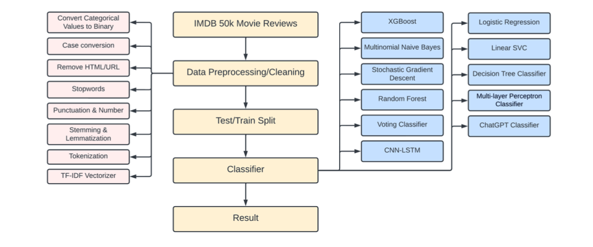

Introduction
The project focuses on performing sentiment analysis on IMDb movie reviews to classify them as either positive or negative. This involves leveraging the IMDb Large Movie Review Dataset, which consists of 50,000 balanced reviews, equally split between positive and negative sentiments. The primary motivation is to help users quickly evaluate movie quality by analyzing the textual reviews. For more details, see the project report. Using a mix of traditional machine learning and advanced deep learning techniques, the project explores multiple methods to achieve high classification accuracy, eventually settling on a CNN-LSTM hybrid model that demonstrated exceptional performance.
Data Preprocessing and Feature Engineering
Data preprocessing played a critical role in preparing raw reviews for model training. This involved:
- Cleaning data by removing HTML tags, URLs, stopwords, and punctuation.
- Normalizing text using stemming and lemmatization to reduce dimensionality.
- Tokenizing reviews into smaller units for vector representation.
A Term Frequency-Inverse Document Frequency (TF-IDF) vectorizer was employed to create a feature matrix, effectively capturing word importance within the dataset. These steps ensured the data was structured, noise-free, and ready for training. You can find the implementation in the Python code notebook.

Model Training and Results
Eleven models were tested, including Logistic Regression, Random Forest, and advanced neural networks like CNN-LSTM. While simpler models provided competitive results, the CNN-LSTM hybrid model stood out, achieving a 90% accuracy rate by combining convolutional networks for spatial feature extraction and LSTMs for temporal dependencies. This highlighted the potential of deep learning for text-based sentiment analysis. For a detailed explanation of the CNN-LSTM model, check the model implementation code.
A comprehensive presentation of the project can be accessed here.